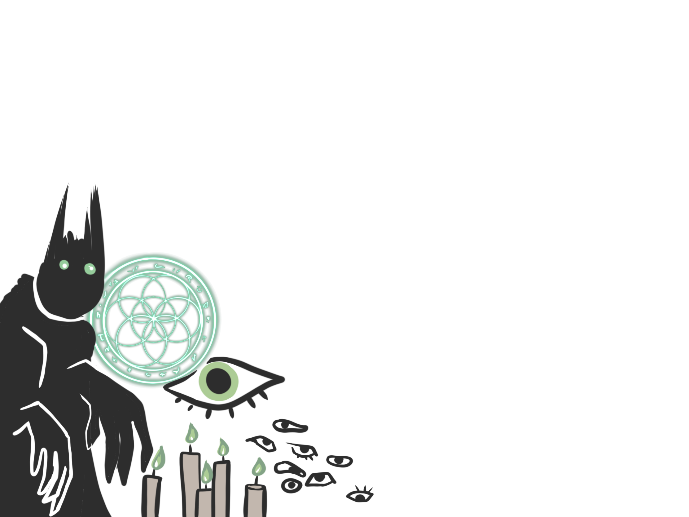
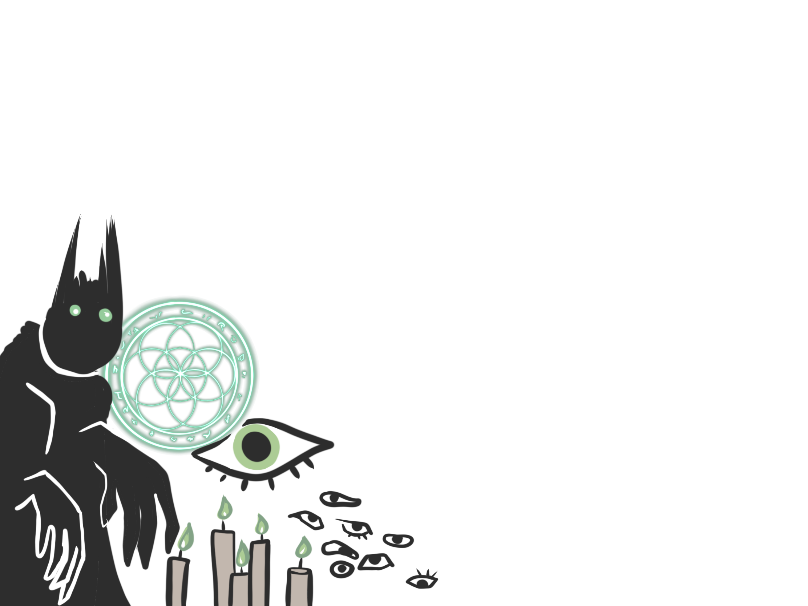

Welcome to Campus Conspiracies, your insider's guide to all things intriguing and captivating at New York University Abu Dhabi. We're the podcast that's not afraid to uncover the juiciest stories, the latest gossip, and the most buzzworthy news on our dynamic campus. With a passion for uncovering the untold tales, we're here to dive deep into the vibrant heart of NYUAD and bring you the inside scoop on the fascinating world we call home. Join us as we unravel the campus's many mysteries, explore the vibrant cultural scene, and share the remarkable stories of the students, faculty, and staff that make NYUAD an extraordinary place to learn, live, and dream. Get ready to tune in, connect, and be part of the Campus Conspiracies community, where the intriguing stories never stop!

 
